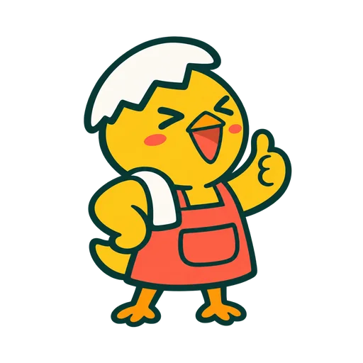
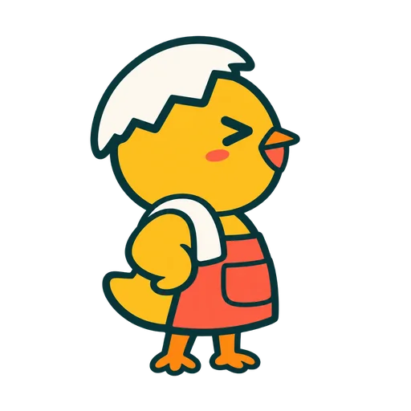

Style guide
Every token and shared component in css/base.css. See frontend/DESIGN.md for when to use each.
Colour
Ink for text and recorded data, the ink-green accent for what is interactive or predicted, yolk fills for selected and hover, coral for callouts. Yolk and coral are never small text.
Ink--ink #103f40
Yolk--yolk #ffc629
Coral--coral #f26350
Cream (page)--cream #fff4dd
Shell (surface)--shell #fffdf5
Muted--muted #6b604d
Subtle--subtle #a7a592
Accent--accent #2a766f
Accent strong--accent-strong #17605b
Accent soft (yolk)--accent-soft #ffe7a1
Accent tint (yolk)--accent-tint #fff1c9
Coral strong--coral-strong #b23a24
Coral soft--coral-soft #fde4da
Neutral soft--neutral-soft #f7edd8
Sand soft--sand-soft #fcefd2
Border--border #e2d3b3
Divider--divider #efe4cb
Error--error #a3193f
Error soft--error-soft #fbe6ea
Heat 1--heat-1 #7fbbaf
Heat 2--heat-2 #479589
Heat 3--heat-3 #226e66
Heat 4--heat-4 = ink
Sidebar and top bar--sidebar = shell
Current page--nav-current = yolk
Wash--wash-gradient
Type
Baloo 2 for the wordmark and headings; Nunito at weight 400 for everything people read.
.number 44838
.page-heading h1 36Page title
--text-xl 32Sign-in heading
--text-lg 20Section heading
--text-md 16Body text and card titles
--text-sm 14Controls, labels, table cells
--text-xs 12Captions and metadata
--font-displayBaloo 2: chicky, huat tomorrow
--font-uiNunito: body, controls, charts, the assistant · 播放中文
Logo
From the asset sheet, in images/brand/. Keep it on Cream, Shell or Yolk-soft; never recolour it or put it on Ink.
Lockup: the header and the sign-in cardlogo-lockup.svg
Wordmark, text-only placementswordmark.svg
Mark, 40px and up: app icons, link previewlogo-mark.svg
Small mark, 16–32px: the faviconlogo-mark-small.svg
Tagline pill, beside the wordmark; never the logo on its ownhuat-pill.svg
Characters
Chicky is the face of the product; Uncle is the voice. They appear together only to welcome people. Every picture is decorative (alt=""), 512px WebP.
Chicky
chicky/front.webp
chicky/three-quarter.webp
chicky/side.webpchicky/spot-receipt.webpchicky/spot-prep.webpchicky/empty-cheer.webpchicky/empty-egg.webpchicky/state-cooking.webpchicky/state-oops.webpUncle
uncle/front.webpuncle/three-quarter.webpuncle/avatar.webpuncle/pointing.webpuncle/presenting.webpTogether, only to welcome
chicky/duo-wave.webpUncle’s voice states
data-voice-state on the launcher, the panel and anything that follows him (chickyAssistant.follow). Each state swaps his picture and shows one decoration; they animate only without reduced motion. The words stay in the status line for screen readers.

Ready
At rest: the round avatar on the launcher, nothing beside him
Listening
Recording: ink arcs
Thinking
Waiting for a reply, a transcript or speech: a “…” bubble
Speaking
Reading aloud, even with the panel closed: coral sound bars
Buttons and tags
One primary button per view.
Cards and forms
Every card opens with a title and caption. Forms end in one actions row: status left, buttons right.